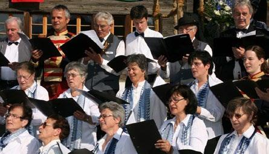
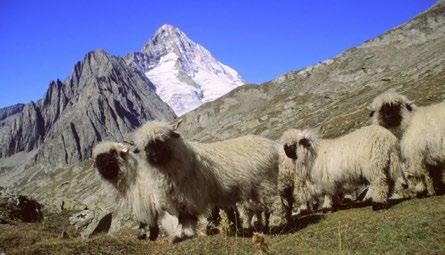
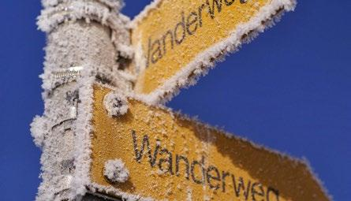
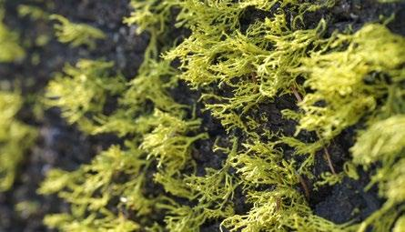

Verwaltung

Hier finden Sie alles Wissenswerte zur Gemeinde Ausserberg. Wer sie ist, was sie macht und woher sie kommt
— zum Thema
Kultur & Vereine

Hier finden Sie alles Wissenswerte zur Gemeinde Ausserberg. Wer sie ist, was sie macht und woher sie kommt. Wer sie wirklich, wirklich, wirklich, wirklich, wirklich ist, was sie wirklich macht und woher sie kommt
— zum Thema
Wirtschaft

Hier finden Sie alles Wissenswerte zur Gemeinde Ausserberg. Wer sie ist, was sie macht und woher sie kommt
— zum Thema
Bildung

Hier finden Sie alles Wissenswerte zur Gemeinde Ausserberg. Wer sie ist, was sie macht und woher sie kommt
— zum Thema
Kirche

Hier finden Sie alles Wissenswerte zur Gemeinde Ausserberg. Wer sie ist, was sie macht und woher sie kommt
— zum Thema
UNESCO
Schlagzeilen zum Thema UNESCO Jungfrau-Aletsch.
Das UNESCO-Welterbe Schweizer Alpen Jungfrau-Aletsch umfasst mit einer Fläche von 824 Quadratkilometer nahezu die gesamten Berner Hochalpen mit ihren monumentalen Fels- massiven auf dem Gebiet der Kantone Bern und Wallis.
Mit ihren monumentalen Fels- massiven auf dem Gebiet der Kantone Bern und Wallis.
— zum Thema
www.jungfraualetsch.ch
Wohnen in Ausserberg
Derzeit stehen folgende Objekte zur Vermietung und zum Verkauf
— zum ThemaProbleme / Hinweise
- Die drei Spalten auf der linken Seite ist der Platz der Inhaltsblöcke. Diese Blöcke sollten eine gleiche Höhe haben, damit sie sich schön anordnen. Ein Problem entsteht aber, wenn der Text zu lange ist (siehe Kultur & Vereine).
- Die rechte Spalte beinhaltet die Schlagzeilen. Jede Schlagzeile hat weist eine eigene Höhe aus.